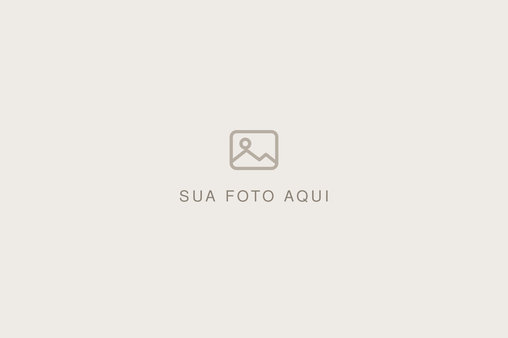
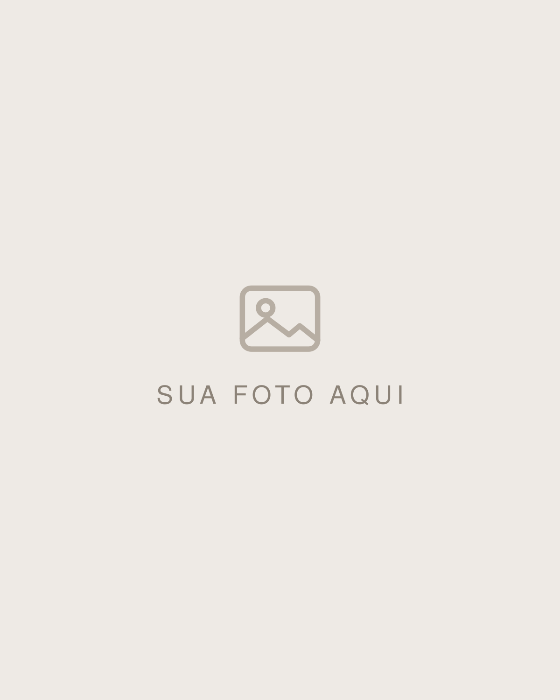
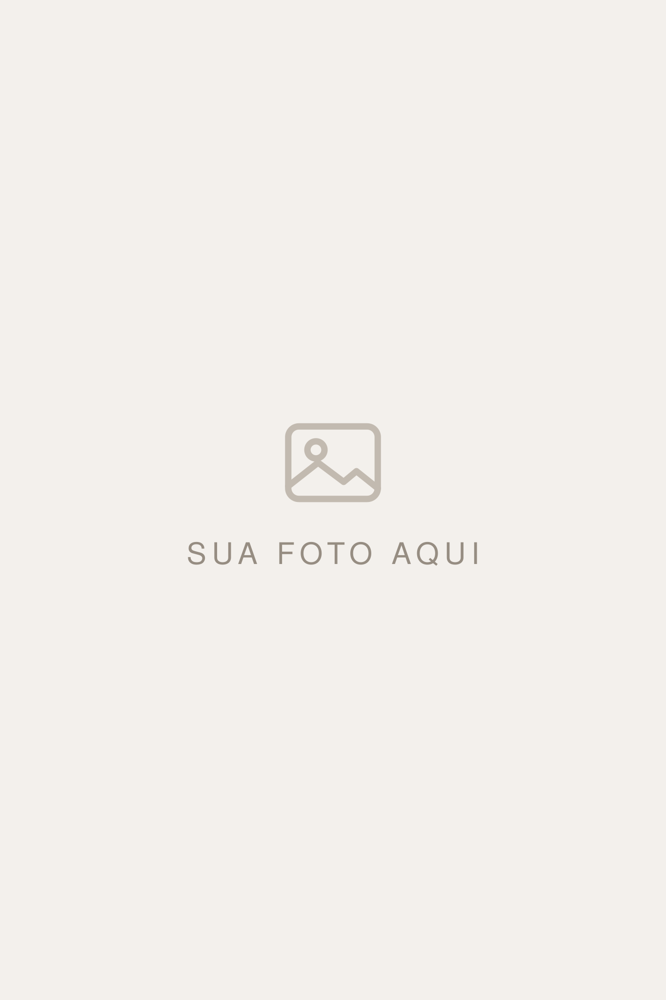

Sistema visual da área de trabalho do Jordan (estudio.html, configuracoes.html, revisar-contrato.html, assinar.html). Não vale pra portfólio, cadastro público nem impressos.
Petróleo (--accent) é a cor de ação e destaque. Preto e cinzas são texto. --soft e --line só aparecem como fundo (nunca como borda pra separar).
Uma família só, Inter. --serif existe pra compatibilidade com o resto do código, mas aponta pra Inter também. Par serifada+sans é regra do que o casal vê (portfólio, cadastro, revisar, assinar).
Ordem hierárquica: primário → secundário → fantasma. Perigo só usa cor no primário; nunca colore uma seção inteira.
No desktop, botão de voltar em conteúdo com ícone + rótulo. No mobile, vira só ícone ancorado à esquerda do header (o de conteúdo some). Nunca os dois juntos.
Ícone Lucide num quadradinho pastel #EAF1F3 com cor --accent. Duas variantes: sm (28×28, radius 8, ícone 14px) e md (36×36, radius 10, ícone 16px). O pattern é usado no kpi-icone, legend-icone, mc-icone.
Quatro níveis: body branco → seção (fieldset/KPI) branco com sombra dupla → hero petróleo com sombra maior → flutuante, pro que passa POR CIMA da página. Nada usa borda pra elevar.
Hierarquia, não parede de pílulas: só a data/contagem é pílula em destaque; local e valor viram meta leve embaixo. Sem badge de status e sem ação de contrato no topo (redundantes) — o topo guarda só arquivar e excluir.
Quarto nível, só pra o que fica POR CIMA da página: a barra de navegação do celular. A luz vem de cima — sombra em camadas caindo pra baixo, fio claro na aresta de cima, fio escuro na de baixo, e o próprio elemento em degradê de branco pro quase-branco. Sem borda, como todo o resto.
Card na home (some quando não há pendência) que leva à página de pendências. Fundo terroso suave (#F8F4EE, âmbar puxado pro taupe pra matar o brilho amarelo); ícone e contagem em taupe (#EBE2D3) com texto marrom. Sombra leve. A página agrupa o que precisa de ação por frente de trabalho.
O botão Limpar (verde sólido à direita de cada linha) dispensa a pendência localmente (via localStorage, com modal de confirmação antes): a linha some da lista e do contador, mas nada é tocado no banco. Se o status do contrato mudar, a pendência reaparece.
Pontas soltas e passos esquecidos: rascunhos pra enviar, contratos esperando assinatura e clientes confirmados sem contrato.
Subtítulo padrão da página de pendências (.pagina-sub, 14px, --ink-soft).
Card branco radius 16 com padding 32 32 26. Ícone em pill sempre INLINE ao lado do h3, nunca acima (2026-09-09). Corpo em --ink-soft line-height 1.6. Banner âmbar entra abaixo do campo quando o link é liberado pela primeira vez.
Vai criar um rascunho editável e abrir a página de revisão. Nada é enviado pro casal enquanto você não copiar o link.
Passos verticais com linha conectora fina. Concluído: --accent + check. Assinado: --ok. Pendente: --soft + circle-dashed. Título do passo pendente fica em --ink-soft.
Em /configuracoes → Contrato e assinatura, duas telas: um índice com os modelos salvos + a assinatura padrão, e um editor full-width (sidebar some) que abre ao clicar num modelo. Editar um modelo nunca muda contratos já gerados: a geração congela um snapshot do texto no próprio contrato.
Assinatura padrão: preview grande em cima, três modos exclusivos (cursiva rende o nome em fonte script, desenhar abre canvas, enviar imagem faz upload) e Definir como padrão. É a assinatura que entra quando o Jordan confirma um contrato.
O título da home é um cumprimento com peso brincado: o horário (Bom dia,) fica leve (peso 400) e só o nome completo vem pesado (peso 800). A frase de apoio vira subtítulo menor em itálico na 2ª linha (--ink-soft).
Dropdown de altura travada (400px) com scroll interno: scrollbar-gutter reserva o espaço da barra pra o layout não pular. Cada item tem título em negrito (o evento: Novo cliente, Contrato assinado, Casal abriu o contrato, Aguardando assinatura, Casamento em X dias) e sub com o casal (sem telefone). O kebab desliza o item pra esquerda (estilo WhatsApp) revelando "Marcar como não lida" atrás, sem menu popover.
Avatar e sino compartilham a mesma animação (pop scale 1.08 + sombra suave atrás, cubic-bezier(.34,1.4,.5,1), sem anel) pra combinarem. No touch a animação é neutralizada (o feedback fica no repouso).
Sem borda. Bg --soft, radius 8, padding 9px 12px. Foco muda o bg pra #EEF0F3, nada de anel colorido.
Confirmação leve pro Jordan: fixo em bottom:28px, centro. Fade + slide-up 150ms. Aparece a cada autosave.
Toda página de lista mostra skeleton enquanto carrega (shimmer lento --soft → #EEF0F3, 2.1s, segurado ~900ms no refresh pra não piscar) cobrindo tudo (saudação, card de atenção, KPIs, listas). Quando o conteúdo real entra, os blocos fazem um fade + slide-up escalonado (estilo Framer, animarEntrada, 65ms por bloco) pra a troca não ser abrupta. No mobile, puxar a lista pra baixo (só no topo) traz a página junto (rubber-band) e mostra um chip branco com um ring estilo shadcn, que surge crescendo (scale .6 → 1) + fade-in conforme o puxão e some com fade ao terminar. O detalhe fica fora do pull-to-refresh (é form em edição).
Card estilo shadcn: branco radius 22 com sombra premium sobre fundo --soft (salta por bg+sombra, não por borda). Logo no topo, saudação leve com emoji, link "Esqueci a senha" na linha do label da senha, botão retangular petróleo com a micro-animação Framer. Sem focus ring, sem título redundante.
Status de cliente e de contrato. Cor condicional, uma por estado, sempre o par tom pastel de fundo + texto escuro do mesmo matiz. Raio de 6px: sutilmente quadrado, pra ler como etiqueta e não como botão de filtro (os pills de filtro são os redondos). Texto 10.5px, semibold, tracking .03em. Definido em 22/10/2026, no lugar do selo 100% redondo e cinza, que sumia na linha branca.
Novo é âmbar porque é o estado que pede ação (é o grupo "Cliente novo pra responder" da tela Precisa de atenção). Confirmado é petróleo, realizado é verde de concluído, arquivado é o neutro.
Só no editor do contrato de um cliente (o editor de modelos não tem). Coluna de 320px à esquerda, fundo --soft, com cartões flutuantes empilhados (papel, raio 20px, --sombra-card, 12px entre eles). Cada cartão abre com o mesmo cabeçalho da ficha: ícone num quadrado de 36px (raio 13px, accent-tint) + título 14px semibold + uma linha de explicação. No celular vira gaveta pela esquerda.
Campos com a cara do documento. O chip do campo usa o mesmo bege do campo dentro do texto (--campo #EDE7DA, texto accent, raio 7px): o que se clica é o que aparece no contrato. Hover escurece pra --campo-hover #E4D9C4 e sobe 1px; o clique encolhe pra .97 e o chip vira verde de "Inserido" por 0,9s.
Escolha de modelo como rádio. O atual fica em accent-tint com o círculo cheio e o check; os outros têm o círculo vazio em --line. O padrão leva um selo neutro "Padrão" (raio 6px).
Blocos em ladrilhos de duas colunas (fundo --soft, raio 14px, ícone accent, título e uma linha), que viram accent-tint no hover.
Em /painel/atelie, os modelos de site do fotógrafo. Cada modelo é um cartão com miniatura: a própria página encolhida no topo (o topo do site em 1440px, raio 18px só em cima), nome 14.5px semibold e a data da última edição embaixo. É a cara do site que identifica o modelo, não um ícone. Cartão branco com --sombra-card; no hover sobe 1px e a sombra abre (--sombra-card-hover), só onde existe mouse.
Estado em selo, por cima da miniatura (raio 6px, seção 17): No ar é o verde de sucesso, porque é o que está valendo. Quando o modelo no ar tem edição que ainda não foi publicada, ganha um segundo selo âmbar, Mudanças fora do ar. Modelo fora do ar não leva selo: ausência já diz.
Ações no kebab, num disco branco translúcido sobre a miniatura (que pode ser escura): Pôr no ar, Editar, Ver como fica, Duplicar, Descartar mudanças (só quando há edição fora do ar num modelo já publicado), Renomear, Apagar. Clicar no cartão abre o editor (seção 20). Pôr no ar e Apagar pedem confirmação. O modelo no ar não se apaga (a opção fica desligada, com o motivo no título).
Beta. Enquanto o Ateliê está em teste, o título da galeria leva o selo Beta (âmbar, raio 6px, seção 17) e a tela abre com um CartaoAviso âmbar ("atenção") dizendo que ele ainda não funciona 100% e pedindo pra conferir em "Ver como fica" antes de pôr no ar. Sai tudo junto quando o Ateliê sair do teste.
Modelo novo nasce guiado. "Novo modelo" não abre página vazia: abre uma estrutura curta e centralizada (Título e texto "Comece por aqui", Foto com texto, Título e texto "Antes de publicar" e a chamada do WhatsApp) em que cada bloco explica, no próprio texto, como ele funciona. O fotógrafo aprende mexendo e vai trocando o exemplo pelo dele. Se algum texto de exemplo sobrar, a confirmação de publicar troca o aviso âmbar por "Ainda tem texto de exemplo nesta página…", porque ele apareceria pro casal.
Novo modelo sem borda tracejada. O cartão de criar é um fundo #EEF0F3 (um degrau abaixo do --soft do painel, onde ele sumiria) com o ícone num quadrado branco elevado: o tracejado do índice de contratos é borda, e borda não separa nada aqui. No hover o fundo vira accent-tint.
Tela cheia, sem a moldura do app (como o editor de contrato). Três colunas sobre o fundo --soft: blocos e estrutura à esquerda (300px), a página de verdade no meio, num quadro branco de raio 16px com --shadow-alta, e os campos do que está selecionado à direita (340px). As laterais são cartões flutuantes (papel, raio 20px, --sombra-card), o mesmo desenho do painel lateral do contrato (seção 18).
Peças do Puck com a pele da casa. Os campos, a lista de itens e a estrutura vêm do editor open source, mas os tokens dele são trocados no tema (editor-tema.css): largura de borda e de foco zero, campo com fundo --soft e raio 10px (foco escurece pra #EEF0F3), cor de ação petróleo, Inter. Exceção única à regra de borda (decisão do Ricardo Grauppe, 22/10/2026): o bloco em edição na página ganha contorno azul de ferramenta, #2563EB com 2px no selecionado e o mesmo azul a 55% no que está sob o mouse, mais a etiqueta com o nome. É ferramenta desenhada por cima do site (como no Elementor), não borda da interface, e nunca aparece pro casal; o petróleo da marca sumia sobre foto escura e fundo bege. Só no canvas do editor: campos, cartões e o resto do painel seguem sem borda e sem anel de foco. Com um bloco selecionado, o cabeçalho dos campos ganha, numa linha própria embaixo do nome do bloco, o atalho Campos da página (texto petróleo, ícone de documento, hover --soft), que volta pro título e o contato do estúdio. Escolha em rádio (fundo, alinhamento, colunas) vira trilho --soft com a opção marcada em branco elevado e texto petróleo, o mesmo desenho do seletor Computador/Celular.
Blocos agrupados pelo que fazem, que é como se procura: Abertura e fotos, Texto, Preços, Contato e Espaçamento (título do grupo 11.5px semibold --ink-soft). Nunca pela origem do bloco: toda página começa do zero e qualquer bloco entra nela. E todo bloco entra pronto, com texto, preço e foto de exemplo, nada entra vazio.
Blocos em lista, cada um com ícone accent num quadrado accent-tint, nome e uma linha do que ele é. Clicar põe o bloco logo depois do selecionado (ou no fim da página); arrastar solta onde quiser. Hover em --soft.
Salvamento sem botão, como no contrato: o estado fica embaixo do nome (Salvando…, Tudo salvo em verde, erro em vermelho). Publicar é a única ação primária, e só aparece ligada quando há mudança fora do ar.
No celular, só ajustes. Montar a página é coisa do computador; no celular o editor serve pra corrigir o que já existe: texto, preço, foto, foco, publicar, versões. A página ocupa a tela e uma barra flutuante embaixo tem só Estrutura (a lista pra escolher o bloco, sem arrastar) e Campos, que abrem como folha de baixo pra cima (raio 22px no topo). Adicionar, arrastar, duplicar e apagar bloco ficam desligados, e a folha da Estrutura começa com uma linha avisando: pra montar ou reorganizar a página, abra no computador. Tocar num bloco da página abre os campos dele.
Campo de foto nos campos do bloco: a miniatura da foto (raio 12px, proporção 16:10, object-fit: cover) com os botões embaixo, Trocar foto (secundário) e, quando a foto é opcional, Tirar (fantasma). Sem foto, a miniatura vira um ladrilho #EEF0F3 com o ícone e "Escolher foto", e clicar nele abre a biblioteca. Nunca se digita endereço de imagem.
Biblioteca em janela sobre a tela (raio 22px, --shadow-alta; no celular, folha de baixo pra cima): primeiro Suas fotos, as enviadas, da mais nova pra mais antiga; depois Fotos que vieram com o site. Grade quadrada de raio 12px. A foto escolhida ganha um véu petróleo de 28% e um disco petróleo com o check no canto, como o círculo cheio do rádio (seção 18). Nada de anel em volta: seria borda marcando estado. Enviando, o ladrilho fica #EEF0F3 com o texto. Apagar é um disco branco com a lixeira no canto da foto, sempre visível (no celular não existe hover), e pede confirmação; foto em uso num modelo não se apaga.
Foto de exemplo. Bloco recém-colocado e modelo guiado nunca trazem foto de um estúdio de verdade: trazem uma foto de exemplo desenhada (public/img/atelie/exemplo-*.svg), bege #EEEAE5 com o ícone de imagem e "SUA FOTO AQUI" em caixa alta espaçada, uma por formato (paisagem 3:2, retrato 4:5, vertical 2:3, escura pra citação) e um "SEU LOGO" claro pra capa. Ela diz sozinha o que fazer, e enquanto estiver na página a confirmação de publicar avisa, como faz com o texto de exemplo.



A foto é reduzida no navegador antes de subir (lado maior até 2560px, JPEG): foto de câmera tem 10 MB, e o site não precisa disso pra abrir rápido no celular do casal.
Exceção a este brandbook, que é do painel: os blocos aparecem no site do fotógrafo, então falam a língua da proposta (Bodoni Moda nos títulos em caixa alta espaçada, Jost leve no texto, petróleo #003646, selo .dica em pílula, entrada ao rolar). São pra montar páginas do zero sem fugir dessa língua. Tudo mobile-first: o celular é o padrão e o computador vem no min-width.
Título e texto: selo opcional, título h2 da proposta, parágrafos (linha em branco separa) em Jost 16px, altura 1.8, coluna de até 620px. Alinhado ao centro ou à esquerda.
Galeria: grade de fotos cortadas na mesma proporção (retrato 2:3, quadrada ou paisagem 3:2), com foco por foto. Duas colunas no celular (uma, se a galeria tiver só duas por linha) e de duas a quatro no computador. Respiro de 10px entre as fotos, sem moldura.
Foto com texto: foto 4:5 de um lado, selo, título e texto do outro, e um botão opcional no estilo do .cta da proposta, em petróleo. No celular a foto vai em cima. A foto pode ficar à esquerda ou à direita. Link do botão aceita só endereço da web, WhatsApp, e-mail, telefone ou âncora (#), nunca script.
Espaço: respiro vazio de três alturas (pequeno, médio, grande), pra separar blocos sem linha nenhuma.
Fundo, nos três primeiros e no espaço: branco (o da página), claro (#F6F3F0, o --soft da proposta) ou escuro (#1D1D1B, o da capa, com título e texto em #E8E1DC). É a única forma de separar um bloco do outro: fundo diferente, nunca borda.
Barra da prévia. "Ver como fica" abre a página do jeito que o casal vai ver, com uma barra flutuante embaixo no mesmo desenho da barra do celular do app (gradiente branco, --shadow-flutuante, raio 999): selo âmbar Rascunho (ou neutro com a data, numa versão antiga), o nome do modelo, Computador/Celular (só no computador) e Fechar. É do painel, por cima do site: Inter, não a fonte da proposta.
Modo celular no computador: fundo --soft e a página dentro de um quadro de 390px, raio 28px, --shadow-alta, com as regras de celular do site valendo de verdade (é um iframe da mesma página).
Versões publicadas. Cada vez que um modelo vai pro ar fica guardada uma versão (as 30 últimas). A janela (mesmo desenho da biblioteca de fotos) lista da mais nova pra mais antiga: data e hora, quantos blocos, selo verde No ar na que está valendo, e os botões Ver (fantasma, abre a prévia daquela versão) e Restaurar (secundário). Restaurar leva a versão pro rascunho e pede confirmação; não publica sozinho.
Menu "Mais" do editor, um botão redondo de reticências ao lado do Publicar: Versões publicadas e Descartar mudanças (em vermelho, só ligado quando há mudança fora do ar num modelo que já foi publicado). Descartar confirma como perigo, porque apaga o que foi editado desde a última publicação.
--line só entra como bg de hover.@media (hover: none) todo :hover volta ao repouso (o feedback fica no :active), pra não grudar depois do toque no celular.